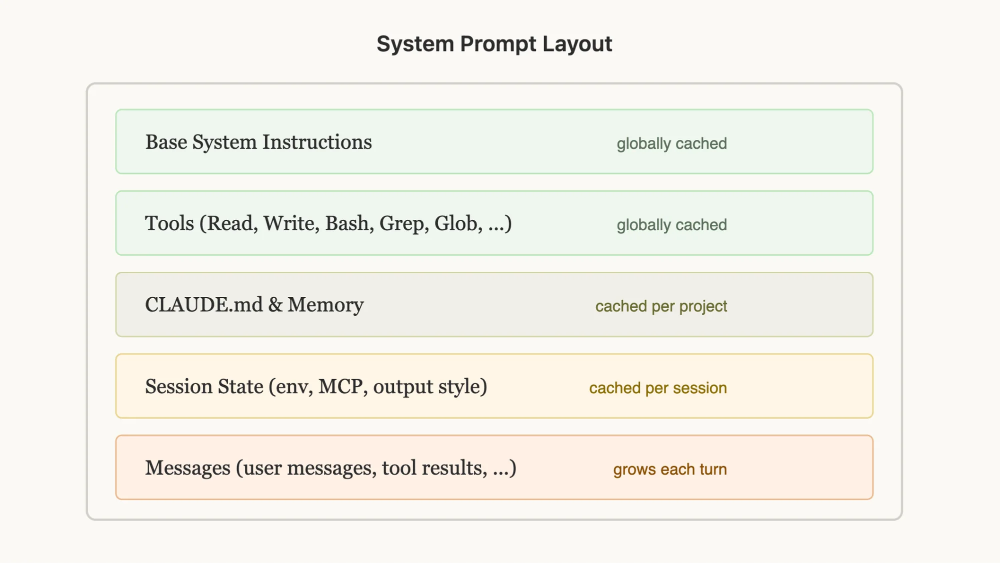
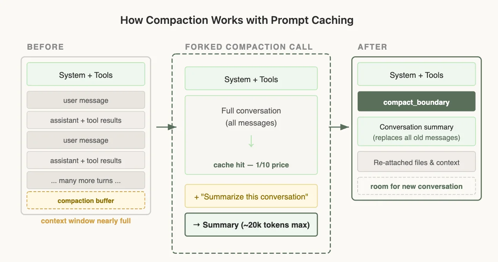

claude.dev · Engineering（作者 Thariq Shihipar） · 2026-04-30
Lessons from building Claude Code: Prompt caching is everything构建 Claude Code 的教训：提示缓存决定一切
60 秒速览：这篇文章在说什么
译者所加，不是原文的一部分 —— 读完这 4 条，再看原文会快很多。
- 一句话结论：提示缓存的规则只有一条——前缀匹配。所以「怎么排」和「什么不许动」比「写得多好」更影响成本。
- 排布：静态在前、动态在后：系统提示词与工具 → CLAUDE.md → 会话上下文 → 对话消息。这套顺序很脆：加个时戳、打乱工具顺序，就全废。
- 三条禁令：信息过期用消息传（别改系统提示词）；中途别换模型（缓存按模型各算各的）；中途别增删工具（工具属于前缀）。计划模式与工具搜索都是围绕这条约束设计出来的。
- 压缩的坑：朴素做法是另发一个不带工具的摘要调用——前缀从第一个 token 就分叉，整段对话按未缓存价格计费。正确做法是沿用父对话完全相同的系统提示词、上下文与工具，只把压缩提示追加成一条新用户消息。
直觉做法
- 信息过期就改系统提示词，改成最新的
- 简单问题切便宜的小模型来答
- 进入计划模式就把工具集换成只读的
- 压缩时另发一个「总结一下」的调用，省事
本文的做法
- 在下一条用户消息或工具结果里带一个 system-reminder 标签
- 要换模型就用子智能体做交接，别在主对话里切
- 工具集不变，把 EnterPlanMode / ExitPlanMode 做成工具
- 沿用父对话完全相同的系统提示词与工具，只追加压缩提示
对照表是译者按原文整理，不是原文自带的表格。
读法建议：如果你只能记一条，记「前缀匹配 → 一切顺序都围绕它排」；如果你在动手实现压缩或子智能体，直接读第五节和第六节。
Best practices for optimizing prompt caching in Claude Code, including how to most effectively structure your prompt, use tools, and layer on compaction.
在 Claude Code 里优化提示缓存（prompt caching）的实践要点：怎么排布提示词最有效、怎么用工具、怎么在压缩（compaction）上叠加处理。
It is often said in engineering that “cache rules everything around me”, and the same rule holds for agents. Long running agentic products like Claude Code are made feasible by prompt caching which allows us to reuse computation from previous roundtrips and significantly decrease latency and cost. At Claude Code, we build our entire harness around prompt caching. A high prompt cache hit rate decreases costs and helps us create more generous rate limits for our subscription plans, so we run alerts on our prompt cache hit rate and declare SEVs if they're too low. These are the (often unintuitive) lessons we've learned from optimizing prompt caching at scale.
工程界常说「cache rules everything around me」（缓存统治我周遭的一切），这条规律对智能体同样成立。像 Claude Code 这种长时间运行的智能体产品之所以可行，靠的是提示缓存：它让我们复用前几轮往返的计算，大幅降低延迟与成本。在 Claude Code 里，我们整套运行框架都是围绕提示缓存搭起来的。缓存命中率高，成本就低，我们也能给订阅套餐设更宽松的速率上限；所以我们给缓存命中率配了告警，命中率过低就按 SEV（严重事故）处理。下面这些是我们在规模化优化提示缓存时学到的教训（往往反直觉）。
Lay out your prompt for caching为缓存排布你的提示词
提示缓存是前缀匹配，所以顺序决定成本：静态系统提示词 → CLAUDE.md → 会话上下文 → 对话消息。这套顺序很容易被无意破坏——一个时戳、一次工具顺序打乱，就全废。

系统提示词的四层排布 从上到下四层：<b>Static system prompt</b> 与工具（base system instructions and tools，全局缓存）→ <b>CLAUDE.md</b> 与 memory（按项目缓存）→ <b>Session context</b>（env、MCP、输出风格等，按会话缓存）→ <b>Conversation messages</b>（每轮都在增长）。
原文图注：FIG A Claude Code's system prompt is organized so the stable pieces stay cached and only the conversation itself grows turn by turn.
这张图怎么看（0 条）
Prompt caching works by prefix matching—the API caches everything from the start of the request up to each `cache_control` breakpoint. This means the order you put things in matters enormously, you want as many of your requests to share a prefix as possible. How you structure a prompt matters for output quality too, not just cache hits — the prompt engineering fundamentals are the other half of the discipline. The best way to do this is static content first, dynamic content last. For Claude Code this looks like:
提示缓存的原理是前缀匹配——API 会从请求开头一直缓存到每个 `cache_control` 断点。这意味着你把东西放的顺序极其重要：你希望尽可能多的请求共享同一段前缀。提示词怎么排布，不只影响缓存命中，也影响输出质量——提示词工程的基本功是这套功夫的另一半。最好的做法是静态内容在前、动态内容在后。对 Claude Code 来说，顺序是这样的：
1. Static system prompt & Tools (globally cached)
1. 静态系统提示词与工具定义（全局缓存）
2. CLAUDE.md (cached within a project)
2. CLAUDE.md（在一个项目内缓存）
3. Session context (cached within a session)
3. 会话上下文（在一次会话内缓存）
4. Conversation messages
4. 对话消息
This way we maximize how many sessions share cache hits. But this approach can be surprisingly fragile. We’ve broken this ordering before for a variety of reasons, including: putting an in-depth timestamp in the static system prompt, shuffling tool order definitions non-deterministically, and updating parameters of tools (e.g., what agents the Agent tool can call).
这样我们就能让尽可能多的会话共享缓存命中。但这套做法出人意料地脆。我们以前因为各种原因破坏过这个顺序，包括：在静态系统提示词里塞了一个精确到分钟的时戳、不确定性地打乱了工具定义的顺序、以及更新工具的某些参数（比如 Agent 工具能调用哪些智能体）。
Use messages for updates用消息传递更新
信息过期时，改提示词会造成缓存未命中。正确做法是在下一轮的用户消息或工具结果里带一个 <system-reminder> 标签，把新信息交给模型。
There may be times when the information you put in your prompt becomes out of date, for example if you have the time or if the user changes a file. It may be tempting to update the prompt, but that would result in a cache miss and could end up being quite expensive for the user. Consider if you can pass in this information via messages in the agent’s next turn instead. In Claude Code, we add a system-reminder tag in the next user message or tool result with the updated information for the model, which helps preserve the cache.
有时你放进提示词的信息会过期，比如你放了当前时间，或者用户改了一个文件。把提示词更新一下很诱人，但那会造成缓存未命中，对用户来说可能相当贵。可以先想想：能不能在智能体的下一轮里，用消息把这些信息传进去？在 Claude Code 里，我们在下一条用户消息或工具结果里加一个 `
Don't change models mid-session不要在会话中途换模型
缓存按模型各算各的。聊到 100k token 再切 Haiku，反而比让 Opus 答更贵，因为要给 Haiku 重建缓存。真要换，用子智能体做交接。
Prompt caches are unique to models and this can make the math of prompt caching quite unintuitive. For example, if you're 100k tokens into a conversation with Opus and want to ask a question that is fairly easy to answer, it would actually be more expensive to switch to Haiku than to have Opus answer, because we would need to rebuild the prompt cache for Haiku. If you need to switch models, the best way to do it is with subagents; extending the above example, you could deploy a subagent that prompts Opus to prepare a “hand-off” message to another model on the task that it needs to get done. We do this often with the Claude Code’s Explore agents, which use Haiku.
提示缓存是按模型各算各的，这让缓存的账算起来很反直觉。比如你跟 Opus 已经聊了 100k token，这时想问一个挺好回答的问题，切到 Haiku 反而比让 Opus 回答更贵，因为我们得为 Haiku 重建提示缓存。如果确实需要换模型，最好的方式是用子智能体；接着上面的例子，你可以派一个子智能体，让它提示 Opus 写一条「交接」消息给另一个模型，说明它需要完成的任务。Claude Code 的 Explore 智能体就常这么干，它们用的是 Haiku。
Never add or remove tools mid-session永远不要在会话中途增删工具
工具属于被缓存的前缀，增删一次就废掉整段对话的缓存。计划模式的做法是「工具集不变，把 EnterPlanMode / ExitPlanMode 做成工具」；工具太多则用 defer_loading 发轻量桩，让模型按需发现。
Changing the tool set in the middle of a conversation is one of the most common ways people break prompt caching. It seems intuitive—you should only give the model tools you think it needs right now. But because tools are part of the cached prefix, adding or removing a tool invalidates the cache for the entire conversation.
在对话中途更换工具集，是人们最常踩的破坏提示缓存的坑之一。这看起来理所当然——你只该给模型它当下需要的工具。但工具属于被缓存的前缀，增删一个工具会让整段对话的缓存全部失效。
Using Plan Mode to design around the cache用计划模式绕开缓存约束做设计
Plan Mode is a great example of designing features around caching constraints. The intuitive approach would be: when the user enters plan mode, swap out the tool set to only include read-only tools, but that would break the cache. Instead, we keep all tools in the request at all times and use EnterPlanMode and ExitPlanMode as tools themselves. When the user toggles Plan Mode on, the agent gets a system message explaining that it's in Plan Mode and what the instructions are: explore the codebase, don't edit files, and call ExitPlanMode when the plan is complete. The tool definitions never change. This has a bonus benefit: because EnterPlanMode is a tool the model can call itself, it can autonomously enter plan mode when it detects a hard problem, without any cache break.
计划模式（Plan Mode）就是围绕缓存约束设计功能的一个好例子。直觉做法是：用户进入计划模式时，把工具集换成只含只读工具，但那样会破坏缓存。我们的做法是让请求里始终带着全部工具，而把 EnterPlanMode 和 ExitPlanMode 本身做成工具。当用户打开计划模式，智能体会收到一条系统消息，说明它现在处于计划模式以及该做什么：探索代码库、不要改文件、计划完成后调用 ExitPlanMode。工具定义从不改变。这还有个额外好处：因为 EnterPlanMode 是模型自己能调用的工具，它可以在发现难题时自主进入计划模式，而不破坏缓存。
Use tool search to defer instead of remove用工具搜索延迟加载，而不是删除
The same principle applies to our tool search tool. Claude Code can have dozens of MCP tools loaded, and including all of them in every request would be expensive, but removing them mid-conversation would break the cache. Our solution: `defer_loading`. Instead of removing tools, we send lightweight stubs ( just the tool name, with `defer_loading: true`) that the model can “discover” via tool search when needed. The full tool schemas are only loaded when the model selects them. This keeps the cached prefix stable because the same stubs are always present in the same order. You can also use the tool search tool through our API to simplify this.
Compacting without breaking the cache压缩而不破坏缓存
朴素做法是另发一个不带工具的摘要调用——那会让前缀从第一个 token 就分叉，整段对话按未缓存价格计费。正确做法是沿用父对话完全相同的系统提示词与工具，把压缩提示追加为一条新的用户消息。

压缩怎么不破坏缓存 上半 Before：系统提示词与工具，加上许多轮对话，上下文窗口快满了。中间是一次 fork 出来的压缩调用：复用同一段前缀，于是命中缓存、价格只有十分之一；它追加一句 Summarize this conversation，返回约 20k token 的摘要。下半 After：新会话带着摘要继续，原文消息被替换。
原文图注：FIG B When the context window fills up, Claude Code forks a cached call to summarize the conversation, then resumes with the summary in place of the original messages.
这张图怎么看（0 条）
Compaction is what happens when you run out of the context window. We summarize the conversation so far and continue a new session with that summary. Compaction interacts with prompt caching in ways that are easy to get wrong. To compact a conversation, you have to send the full conversation to the model so it can write a summary. The simplest way to do that is a separate API call with its own system prompt (something like “summarize this”) and no tools attached, but that's exactly where the cost trap is. Prompt caching only applies when a request's prefix matches what's already cached, byte for byte, from the start. Your main conversation is cached under one system prompt and tool set; the summarization call uses a different system prompt and no tools, so the prefixes diverge at the very first token and none of the cache applies. You end up paying the full, uncached input rate for the entire conversation you're sending in — and the longer the conversation (i.e., the more you need compaction in the first place), the more expensive that one call becomes.
压缩（compaction）发生在上下文窗口用满的时候。我们把到目前为止的对话摘要出来，用这份摘要开一段新会话继续。压缩与提示缓存之间的互动，很容易做错。要压缩一段对话，你得把整段对话发给模型，它才能写摘要。最简单的做法是另发一个 API 调用，用自己的一套系统提示词（类似「把这段总结一下」），不挂任何工具——而成本陷阱正出在这里。提示缓存只在请求的前缀与已缓存内容从头逐字节一致时才生效。你的主对话是在一套系统提示词和工具集下被缓存的；摘要调用用的是另一套系统提示词、没有工具，于是前缀从第一个 token 就分叉，缓存一点儿也用不上。结果就是：你发进去的整段对话，全按未缓存的完整输入价格计费——对话越长（也就是你越需要压缩），那一次调用就越贵。
The solution: cache-safe forking解法：对缓存安全的分叉
When we run compaction, we use the exact same system prompt, user context, system context, and tool definitions as the parent conversation. We prepend the parent's conversation messages, then append the compaction prompt as a new user message at the end. From the API's perspective, this request looks nearly identical to the parent's last request—same prefix, same tools, same history—so the cached prefix is reused. The only new tokens are the compaction prompt itself. This does mean however that we need to save a “compaction buffer” so that we have enough room in the context window to include the compact message and the summary output tokens. Compaction is tricky but luckily, you don't need to learn these lessons yourself—based on our learnings from Claude Code we built compaction directly into the API, so you can apply these patterns in your own applications.
我们做压缩时，用的是与父对话完全相同的系统提示词、用户上下文、系统上下文和工具定义。我们把父对话的消息放在前面，再把压缩提示作为一条新的用户消息追加到末尾。从 API 的角度看，这个请求和父对话的最后一个请求几乎一模一样——同样的前缀、同样的工具、同样的历史——所以被缓存的前缀能复用。唯一的新 token 就是压缩提示本身。不过这也意味着我们得留出一块「压缩缓冲」，让上下文窗口里有足够空间容纳压缩消息和摘要输出的 token。压缩很微妙，但好在你不必自己踩这些坑——基于在 Claude Code 上学到的经验，我们直接把压缩做进了 API，你可以把这些模式用到自己的应用里。
Lessons learned五条经验
前缀匹配、用消息而非改系统提示词、中途不换工具与模型、把缓存命中率当可用性监控、分叉操作必须共享父级前缀。
Here are a few patterns we’ve found useful for optimizing prompt caching when building an agent:
以下是我们在造智能体时，优化提示缓存觉得有用的一些模式：
1. Prompt caching is a prefix match. Any change anywhere in the prefix invalidates everything after it. Design your entire system around this constraint. Get the ordering right and most of the caching works for free.
1. 提示缓存是前缀匹配。前缀里任何位置一改，它后面全部失效。把整个系统围绕这条约束来设计。顺序排对了，绝大部分缓存就是免费的。
2. Use messages instead of system prompt changes. You may be tempted to edit the system prompt to do things like entering plan mode, changing the date, etc. but it would actually be better to insert these into messages during the conversation.
2. 用消息，而不是改系统提示词。你可能会想去改系统提示词来做这些事，比如进入计划模式、改日期等等，但其实更好的做法是在对话过程中把它们插进消息里。
3. Don't change tools or models mid-conversation. Use tools to model state transitions (like plan mode) rather than changing the tool set. Defer tool loading instead of removing tools.
3. 不要在对话中途更换工具或模型。用具（tool）来表达状态转换（比如计划模式），而不是换工具集。延迟加载工具，而不是删掉工具。
4. Monitor your cache hit rate like you monitor uptime. We alert on cache breaks and treat them as incidents. A few percentage points of cache miss rate can dramatically affect cost and latency.
4. 像监控可用性那样监控你的缓存命中率。我们给缓存失效配告警，把它当事故处理。几个百分点的缓存未命中率就能显著影响成本与延迟。
5. Fork operations need to share the parent's prefix. If you need to run a side computation (compaction, summarization, skill execution), use identical cache-safe parameters so you get cache hits on the parent's prefix.
5. 分叉出来的操作必须共享父级前缀。如果你要跑一段旁路计算（压缩、摘要、执行技能），就用完全一致、对缓存安全的参数，这样才能命中父级前缀。
Claude Code is built around prompt caching from day one; for the best results when building an agent, we suggest you do, too. Get started with Claude Code today. This article was written by Thariq Shihipar, a member of technical staff on the Claude Code team.
Claude Code 从第一天起就是围绕提示缓存建的；想造出最好的智能体，我们建议你也这么做。今天就来上手 Claude Code。本文由 Claude Code 团队技术成员 Thariq Shihipar 撰写。
补充材料
下面几块都是译者所加，用来补上原文没展开的部分。正文里的虚线链接、虚线术语、上标数字，都能悬停看卡片；这里给出完整的清单，方便你事后再回头查。
延伸阅读地图
原文 10 处正文引用，指向 9 个不同链接；另有 2 张配图未计入。按「不读会不会误解本文」分成三档：必读 / 背景 / 可选，建议顺序即卡片上标注的数字。每条都写了「不点开也能拿到的重点」，所以你可以完全不跳转地读完这篇文章。
提示缓存图解
x.com · A visual guide to prompt caching
正文对应：提示缓存
这是什么：一篇把提示缓存讲成图的长贴：断点在哪、命中怎么算。
为什么值得点：文章通篇默认你懂基本机制。不熟的话先看这份图解，后面的「为什么顺序重要」才有画面感。
不点开也能拿到的重点
把请求看成一段文本，断点之前的都进缓存；下一请求若前缀一致，直接复用，价格与延迟都降一个档。
- 断点即边界
- 前缀一致才命中
- 命中省时省钱
常用工作流（含计划模式）
code.claude.com · Common workflows
正文对应：计划模式（Plan Mode）
这是什么：官方文档：计划模式等日常用法。
为什么值得点：文章用它当「围绕缓存约束设计功能」的范例；看文档能知道它实际怎么被用户开关。
不点开也能拿到的重点
先只读探索、写出计划、确认后再动手；实现上是两个工具（进入/退出），而不是换一套工具集。
- 只读探索
- 计划需确认
- 用工具而非换工具集
工具搜索工具
platform.claude.com · Tool search tool
正文对应：工具搜索工具
这是什么：官方文档：怎么让模型按需发现工具，而不是一次性全塞进请求。
为什么值得点：文章「用工具搜索延迟加载，而不是删除」一节的全部技术依据。
不点开也能拿到的重点
先给轻量桩（名字 + defer_loading），模型选中后再加载完整 schema；前缀因此保持稳定，上下文也不被撑爆。
- 轻量桩
- 选中才加载 schema
- 前缀稳定
压缩（API 能力）
platform.claude.com · Compaction
正文对应：压缩（compaction）
这是什么：官方文档：API 层的压缩怎么工作、参数是什么。
为什么值得点：文章第五节讲的是「自己实现会踩什么坑」；这一页是已经替你处理好的版本。
不点开也能拿到的重点
上下文接近上限时自动摘要并续接会话；命中缓存的前提是沿用同一前缀，这件事 API 已经内建。
- 接近上限时触发
- 摘要后继续
- 内建缓存复用
一项任务在 Opus 5.5 上要花多少钱
claude.dev · What a task costs on Opus 5.5
正文对应：几个百分点的缓存未命中率
这是什么：同站文章：把一次任务的 token 账单拆开算给你看。
为什么值得点：文章说「几个百分点就能显著影响成本」，这一篇给的是具体数字，能让你对量级有感觉。
不点开也能拿到的重点
输入、缓存读取、缓存写入、输出四类 token 单价不同；缓存命中率高时，账单主要是「便宜的那一档」。
- 四类 token 单价不同
- 命中率决定账单结构
- 长会话放大差异
提示词工程最佳实践
claude.com · Best practices for prompt engineering
正文对应：提示词工程的基本功
这是什么：官方文章：怎么写提示词才清楚、稳定、可复用。
为什么值得点：文章一句话把两件事并列了：排布影响缓存，也影响输出质量。这一篇管的是后者。
不点开也能拿到的重点
指令前置、给例子、明确输出格式、把规则写成可勾选的条目；模糊的提示词会让模型的输出也难以评测。
- 指令前置
- 例子比形容词有用
- 输出格式要写死
Claude Code 产品页
claude.com · Claude Code
正文对应：Claude Code
这是什么：产品介绍：这个终端内的编码智能体。
为什么值得点：文章讲的每一层排布都是它的真实结构；对着产品用一遍，再回来看这张图会更清楚。
不点开也能拿到的重点
长时间运行的编码智能体，每天大量请求，所以缓存命中率对成本尤其关键。
- 长会话
- 高频请求
- 缓存敏感
压缩与提示缓存（同页锚点）
platform.claude.com · Compaction and prompt caching
正文对应：压缩
这是什么：上面那页里专讲「压缩怎么和缓存配合」的一节。
为什么值得点：文章第五节末尾说「我们把这些模式做进了 API」——具体规则就在这个锚点里。
不点开也能拿到的重点
压缩调用复用父对话的前缀，只新增压缩提示本身那点 token；因此价格接近「只付新增部分」。
- 复用父前缀
- 只付新增 token
- 需留缓冲
Claude Code 总览
code.claude.com · Claude Code overview
正文对应：上手
这是什么：官方总览：安装、基本用法、能力边界。
为什么值得点：读完全文想动手试「排布 + 缓存」这件事，从这里开始最快。
不点开也能拿到的重点
一份入门文档：装好、跑起来、看它怎么用工具；本文讲的系统提示词分层，在真实使用中能直接被感受到。
- 安装与首次运行
- 工具与权限
- 会话与压缩
术语表
正文里带虚线底线的词，悬停即出解释；这里是完整 11 条，可当速查用。
API 把请求开头那段内容缓存下来，下次请求如果开头逐字节相同，就跳过重算、直接复用。省的是钱和时间，前提是「开头别动」。
像每次都从同一页开始背同一段课文，背过的部分不用重背。
缓存只认「从头开始逐字节一致」的前缀。中间任何一处改动，它后面的全部失效——这就是全文所有设计的出发点。
请求最前面那段固定指令：角色、规则、工具定义。它被全局缓存，所以最不该放会变的东西（时间戳、随机顺序）。
请求里标记「缓存到这儿为止」的断点。缓存是分段存的，所以断点放在哪，决定了复用的粒度。
上下文窗满时，把之前的对话摘要成一段，用它开新会话继续。它天生和缓存冲突：换一套提示词去总结，前缀就分叉了。
只读探索、先写计划的模式。文章拿它当范例：不能靠换工具集来切换状态，否则缓存全废——要把状态切换做成工具。
让模型在需要时自行「发现」工具的机制：请求里只放轻量桩，选中后才加载完整 schema。目的是不删工具、也不撑爆上下文。
工具桩上的一个标记：先不把 schema 放进请求，等模型通过工具搜索选中它再加载。这样被缓存的前缀保持稳定。
请求里有多少比例命中了缓存。作者把它当可用性指标监控：掉几个百分点，成本和延迟就会明显跳升。
独立实例、独立缓存。所以「换模型」的正确做法是派一个子智能体做交接，而不是在主对话里直接切模型。
一次能装下的 token 上限。压缩就是为了在窗口快满时腾地方，同时还得留出「压缩缓冲」给摘要本身。
译者注
正文中上标数字对应这里，解释的是「直译会看不懂」或「原文本身含糊」的地方。
为什么中途切小模型反而更贵
缓存是「按模型」各存一份的。主对话在 Opus 上已经缓存了 100k token，切到 Haiku 时那份缓存用不上，得从头重建——于是你既付了 Opus 已产生的部分，又付了 Haiku 的全量输入。这就是文章说「反直觉」的地方。
缓存未命中为什么会当事故处理
作者说他们给命中率配告警、低了就按 SEV 处理，因为缓存失效不是「慢一点」，而是成本与延迟同时跳一个量级；对订阅制产品，它直接决定能不能给出宽松的速率上限。
「压缩缓冲」是什么
既然压缩要沿用父对话的前缀，就必须在上下文窗口里预留出空间：压缩提示本身、以及摘要输出都要 token。不留这块缓冲，压缩调用会在中途撞上窗口上限。